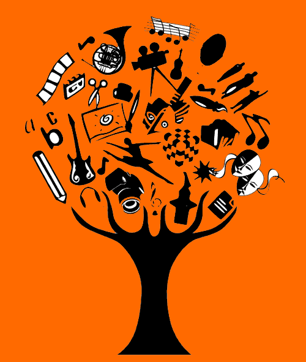

<!-- <div padding class="center">
  <div class="heart">
  </div>
</div> -->

<div *ngIf="showSplash" class="splash">
  <div class="heart"></div>
</div>


<ion-menu id="myMenu" [content]="content" class="side-menu-gradient">
  <ion-header>
    <ion-toolbar color="nation">
      <!-- <div class="profile-image">
        
      </div>
      <h3></h3> -->
      <ion-title>.Nation</ion-title>
      <br>
      <br>
      <div text-center>
        <!--  -->
        <ion-avatar>
          
        </ion-avatar>
        <p>{{nome}}</p>
      </div>
    </ion-toolbar>
  </ion-header>

  <ion-content>
    <ion-list class="side-menu-item">
      <ion-item class="item-content" no lines>
        <button class="buttaonavbar" menuClose ion-item *ngFor="let p of pages" (click)="onAction(p.method, p.component)">
          <ion-icon item-start [name]="p.icon"></ion-icon>
          {{p.title}}
        </button>
      </ion-item>

      <!-- <ion-item class="item-content">
        <button class="buttaonavbar" menuClose ion-item (click)="signOut()">
          Sair
        </button>
      </ion-item> -->
    </ion-list>
  </ion-content>

</ion-menu>

<!-- Disable swipe-to-go-back because it's poor UX to combine STGB with side menus -->
<ion-nav [root]="rootPage" #content swipeBackEnabled="false"></ion-nav>